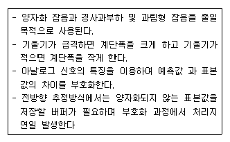
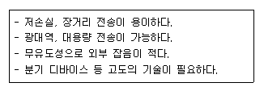
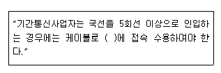

통신설비기능장 (2012-03-11 기출문제)
1과목: 임의 과목 구분(20문항)
1. 다음 중 전화용 송화기의 동작특성으로 설명이 틀린 것은?
- 주파수가 높을수록 음파의 재생은 충실해진다.
- 2~3.5[kHz]에서 최대 응답특성을 갖는다.
- 송화전류를 크게 하려면 공급전원 전류를 크게 하면 좋다.
- 송화기의 동저항은 20~60[Ω]정도이며, 사용연수에 따라 감소한다.
(정답률: 83%)

2. 선형양자화기와 비선형양자화기에 대한 설명 중 틀린 것은?
- 선형양자화기는 양자화 계단폭이 전 입력신호 기울기에 대해서 동일한 계단크기로 양자화하는 방식이며 오차전압이 일정하여 신호가 작은 부분에서는 양자화 잡음영향이 크다.
- 선형양자화기의 품질향상을 위해서는 양자화 레벨 수를 증가시키면 좋은데 부호화 비트수가 증가되어 전송주파수 대역이 증가하고 고소펄스회로가 필요하다.
- 비선형양자화기는 양자화 잡음의 영향을 거의 일정하게 하는 방법이며 입력신호의 진폭이 작은 진폭에 대해서는 큰 계단으로 근사시키고 입력신호 진폭이 큰 진폭에 대해서는 작은 계단으로 대응시키는 방법이다.
- 비선형양자화를 행함으로써 비트 수를 증가시키지 않고 부호화 품질을 향상시킬 수 있다.
(정답률: 70%)
3. 전자식 교환기의 가입자선 정합 기능을 담당하는 ‘BORSCHT'의 설명으로 적합하지 않은 것은?
- B: 통화 전류 공급
- R: 호출 신호 송출
- S: 직류 전류 감시
- H: 과전압 보호
(정답률: 94%)
4. 전자교환기에 사용되는 푸시 버튼 다이얼(Push button dial)에서 ‘8’의 숫자에 알맞은 저군과 고주파수[Hz]의 조합은?
- 저군: 941, 고군: 1209
- 저군: 852, 고군: 1336
- 저군: 770, 고군: 1477
- 저군: 697, 고군: 1633
(정답률: 92%)
5. PCM 방식에서 표본화 주파수는 신호 주파수의 몇 배 이상 되어야 하는가?
- 1.5배
- 2배
- 3배
- 5배
(정답률: 93%)
6. 어떤 기지국의 최번시 총시도 호수가 1,500호, 평균 통화시간이 1.76분일 때 이 기지국의 발생 통화량은?
- 34[Erl]
- 39[Erl]
- 44[Erl]
- 49[Erl]
(정답률: 80%)
7. 전자교환방식의 통화로계 장치에 대한 구성요소이다. 통화로에 접속하는데 직접적으로 관련이 없는 장치는?
- 통화로 장치
- 통화로 제어장치
- 라인메모리 장치
- 주사 장치
(정답률: 78%)
8. TDM-10은 기본적으로 3개의 서브시스템(sub- system)으로 구성되어 있다. 이에 해당되지 않는 것은?
- ASS(Access Switching Subsystem)
- CDL(Central Data Link)
- INS(Interconnection Network Subsystem)
- CCS(Central Control Subsystem)
(정답률: 84%)
9. 다음 설명에 해당되는 다중화 방식은?

- PCM
- DPCM
- ADM
- ADPCM
(정답률: 79%)
10. 다음과 같은 PCM 특유의 잡음 중 표본화 과정에서 얻어진 PAM 신호의 순시 진폭값을 설정된 이산적인 신호로 변환시키는 과정에서 발생하는 잡음은?
- 표본화 잡음
- 과부하 잡음
- 양자화 잡음
- 플리커 잡음
(정답률: 70%)
11. 200[MHz] FM 송신기의 5[MHz] 발진기에서 4,000[Hz]의 변조신호로 200[Hz]의 주파수편이를 걸 때 송신기의 변조지수는 얼마인가?
- 2
- 4
- 8
- 10
(정답률: 54%)
12. 다음 중 진폭제한기(Limiter) 역할을 수행하는 주파수 변별기는? (문제 오류로 실제 시험에서는 모두 정답처리 되었습니다. 여기서는 가번을 누르면 정답 처리 됩니다.)
- Radio형 검파기
- Foster-seeley형 검파기
- 복동조형(Round-travis) 주파수 변별기
- Stagger-tuned 검파기
(정답률: 90%)
13. 10[MHz]의 반송파를 최대주파수편이 30[kHz]로 하고, 5[kHz]의 신호파로 주파수변조시 점유주파수대폭은 얼마인가?
- 40[kHz]
- 50[kHz]
- 60[kHz]
- 70[kHz]
(정답률: 65%)
14. 무선 수신기에서 S/N비를 개선시키는 방법으로 적합하지 않은 것은?
- 주파수 변환회로의 변환이득을 크게 한다.
- 고주파 증폭부의 증폭도를 적당하게 한다.
- 각 증폭기의 대역폭을 넓게 하여 충실도를 향상시킨다.
- 동조회로 등을 사용하여 수신안테나와 고주파증폭기의 임피던스 정합을 좋게 한다.
(정답률: 51%)
15. 다음 중 이동통신 기지국 제어장치(BSC)와 관계없는 것은?
- 트랜시버 유닛(Transceiver Unit)
- 음성 부호화 및 복호화기
- 호처리 프로세서(Call Control Processor)
- 네트워크 인터페이스(Network Interface)
(정답률: 65%)
16. 이동통신에서 상관대역폭(coherence bandwidth)과 가장 관련이 깊은 것은?
- 음영효과
- 지연확산
- 안테나 이득
- 도플러 주파수
(정답률: 81%)
17. 차세대(제4세대) 이동통신의 주요기술에 속하지 않는 것은?
- SDR
- MIMO
- 스마트 안테나
- 레이크 수신기
(정답률: 80%)
18. 다음 중 위성지구국 설치시 고려하여야 할 주변환경과 거리가 먼 것은?
- 지형조건
- 인공잡음
- 기상조건
- 위성과의 거리
(정답률: 91%)
19. 다음 중 송신기 구성요소와 관계가 없는 것은?
- 발진회로
- 증폭회로
- 변조회로
- AGC회로
(정답률: 89%)
20. 수신기의 선택도를 향상시키는 방법과 거리가 먼 것은?
- 고주파증폭단을 증가한다.
- 중간주파증폭단을 증가한다.
- 동조회로의 Q를 높게 한다.
- 저주파증폭부의 이득을 크게 한다.
(정답률: 69%)
2과목: 임의 과목 구분(20문항)
21. 다음 중 자유공간에서 주파수가 300[MHz]인 전파의 파장은?
- 1[m]
- 1/2[m]
- 10[m]
- 20[m]
(정답률: 62%)
22. 다음 중 나이퀴스트(Nyquist) 표본화 주파수는?
- fs = 2fm
- fs < fm
- fs ≥ fm
- fs ≤ 3fm
(정답률: 87%)
23. FDMA, TDMA 또는 CDMA 방식에서 서로 다른 이동통신 교환국간 핸드오프(Hand off) 방식을 무엇이라 하는가?
- 하드 핸드오프(Hard Hand off)
- 소프트 핸드오프(Soft Hand off)
- 소프터 핸드오프(Softer Hand off)
- 소프트 핸드오버(Soft Hand over)
(정답률: 84%)
24. 다음 중 다원 접속방식에서 이동통신 가입자 수용 용량이 가장 많은 것은?
- FDMA
- SDMA
- CDMA
- TDMA
(정답률: 88%)
25. 다음 중 HDLC 프로토콜의 특징이 아닌 것은?
- 전송제어 절차로 비트방식 프로토콜이다.
- 문자 동기에 의해 투명한 데이터 전송을 보장한다.
- 에러검출 방식으로 CRC를 사용한다.
- 에러제어 방식으로 Go-back-N ARQ를 사용한다.
(정답률: 66%)
26. RFID 시스템의 논리적 구성은 크게 4개의 계층구조로 설명할 수 있다. 맞는 것은?
- 디바이스 계층, 센서 네트워크 계층, 미들웨어계층, 애플리케이션 계층
- 전송 계층, 네트워크 계층, 세션 계층, 애플리케이션 계층
- 디지털 계층, 네트워크 계층, 변복조 계층, 애플리케이션 계층
- 위치인식 계층, 센서 프로그램 계층, 분산제어계층, 지능형제어 계층
(정답률: 85%)
27. 데이터를 변조하지 않은 상태, 즉 직류펄스의 형태 그대로 전송하는 방식으로 RZ, NRZ, AMI(Bipolar), Manchester, CMI 등에서 사용되며 LAN과 같은 전용선에 주로 사용되는 고속통신 방식은 무엇인가?
- 동기식(Synchronous) 전송방식
- 비동기식(Asynchronous) 전송방식
- 기저대역(Baseband) 전송방식
- 반송대역(Broadband) 전송방식
(정답률: 84%)
28. 디지털 통신망은 여러 가지 디지털 신호를 전송해야 하는데, 이 때 1초간에 보내는 펄스의 수가 정확하게 맞지 않으면 데이터 손실이 발생하기 때문에 통신망의 모든 장치의 클럭 주파수를 정확하게 동기 시키는데 사용할 수 있는 망동기 방식이 아닌 것은?
- 독립 동기방식
- 상호 동기방식
- 종속 동기방식
- 회선 동기방식
(정답률: 75%)
29. 다음 중 IPv6에 대하여 바르게 설명되지 않은 것은?
- 패킷 형식은 40[Bytes]로 고정된다.
- 주소체계는 16[Bytes]이다.
- 사용 가능한 주소 수는 약 43억 개이다.
- Flow label을 이용하여 QoS를 보장한다.
(정답률: 80%)
30. 다음 중 어플리케이션 수준 방화벽의 장점이 아닌 것은?
- 프록시가 외부에서 내부 호스트로 직접 접근하는 것을 막는다.
- 필요할 경우, 부가적인 인증 시스템을 통합할 수 있다.
- 경계선 방어가 제공된다.
- 속도가 빠르고 투명성이 보장된다.
(정답률: 77%)
31. 다음 중 방화벽의 주요 구성 요소에 속하지 않는 것은?
- 프록시 서버
- 암호 시스템
- 베스천 호스트
- 스크린 라우터
(정답률: 77%)
32. 다음 중 QPSK에 대한 설명으로 틀린 것은?
- 오류확률은 BPSK보다 나쁘다.
- 대역폭 효율은 4[bps/Hz]이다.
- QPSK에서 반송파 위상간의 위상차는 π/2이다.
- 동일한 주기를 기준으로 하면 QPSK 시스템은 BPSK보다 2배의 비트를 전송할 수 있다.
(정답률: 63%)
33. CDMA 시스템 1단 증폭기의 이득이 10[dB], 잡음지수는 2[dB]이고, 2단 증폭기의 이득이 20[dB], 잡음지수는 3[dB]라면 종합잡은지수 NI는 얼마인가?
- 약 2.3[dB]
- 약 4.6[dB]
- 약 8.4[dB]
- 약 10.1[dB]
(정답률: 68%)
34. 다음 중 디지털 신호를 전송하는 LAN의 전송방식으로 적합한 것은?
- 기저대역(baseband) 방식
- 광대역(broadband) 방식
- 캐리어대역(carrierband) 방식
- 하이브리드(hybrid) 방식
(정답률: 81%)
35. 다음 중 의도적으로 수신자로부터 인증된 사용자처럼 가장하여 수신자에게 데이터를 전송하는 보안 위협의 형태에 가장 적합한 것은?
- 가로채기(interception)
- 가로막기(interruption)
- 변조(modification)
- 위조(fabrication)
(정답률: 78%)
36. 광송신기의 출력이 -3[dBm], 광수신기의 수신감도가 -36[dBm], 광섬유의 손실이 1[dB/km]이다. 여기에 접속손실과 광커넥터 손실을 무시한다면, 이러한 광전송 시스템이 무중계 전송 가능한 최대거리는?
- 12[km]
- 33[km]
- 39[km]
- 108[km]
(정답률: 77%)
37. 전화국 간에 설치되는 시내 통신용 케이블로 관로용과 직매용으로 사용되며 전기적 특성 향상을 위해 고밀도 폴리에틸렌으로 2중 절연되어 있어 케이블 심선에 물, 습기가 침투하는 것을 방지하기 위해 젤리로 충진된 케이블은?
- CCP 케이블
- PVC 케이블
- FS 케이블
- PIC 케이블
(정답률: 83%)
38. 다음 중 광학 파리미터(Parameter) 중 광케이블이 단일모드 파이버(Single Mode Fiber)인지 다 모드 파이버(Multi Mode Fiber)인지를 구분하는데 사용하는 것은?
- 개구수
- 비굴절률차
- 수광각
- 규격화 주파수
(정답률: 66%)
39. 광섬유 접속 순서가 맞는 것은?
- 광섬유 절단면 확인 → 예열 → 최종정렬 → 융착 → 완료
- 광섬유 절단면 확인 → 최종정렬 → 예열 → 융착 → 완료
- 광섬유 절단면 확인 → 융착 → 예열 → 최종정렬 → 완료
- 광섬유 절단면 확인 → 예열 → 융착 → 최종정렬 → 완료
(정답률: 68%)
40. 다음은 전송 선로의 한 종류의 특징을 설명한 것이다. 서술한 내용 중 알맞은 전송 선로는 무엇인가?

- UTP 케이블
- FS 케이블
- 광케이블
- 동축케이블
(정답률: 91%)
3과목: 임의 과목 구분(20문항)
41. 다음 중에서 광섬유 케이블의 분류 방법으로 다른 것은?
- 단일 모드 광섬유 파이버
- 계단형 광섬유 파이버
- 언덕형 광섬유 파이버
- 삼각형 광섬유 파이버
(정답률: 65%)
42. 통신용 케이블 드럼의 취급에 관한 설명으로 적합하지 않은 것은?
- 드럼을 싣거나 내릴 때에는 급격한 충격을 주어서는 안 된다.
- 케이블 드럼을 부득이 직접 굴려서 이동할 경우는 화살표 반대 방향으로 굴린다.
- 드럼의 보호판 또는 케이블 고정홈의 보호용 철판은 케이블 포설 직전에 떼어낸다.
- 케이블이 감겨 있는 드럼을 타 장소에 옮길 때는 케이블의 처음과 끝을 드럼에 견고하게 고정하고 보호판을 부착한다.
(정답률: 91%)
43. 전화 중계기의 입력측 전류가 100[mA]이고, 출력측 전류가 10[mA]이면 통화 감쇄량은 얼마가 되는가?
- 1[dB]
- 10[dB]
- 20[dB]
- 50[dB]
(정답률: 62%)
44. 광 전력을 측정하였더니 1[μW]이었다. 절대레벨로 나타내면 몇 [dBm]인가?
- 0[dBm]
- -10[dBm]
- -20[dBm]
- -30[dBm]
(정답률: 67%)
45. 전원 정류 회로의 리플 함유율을 적게 하는 방법으로 잘못된 것은?
- 출력측 평활용 콘덴서의 정전 용량을 작게 한다.
- 평활용 초크 코일의 인덕턴스를 크게 한다.
- 입력측 평활용 콘덴서의 정전 용량을 크게 한다.
- 교류 입력 전원의 주파수를 높게 한다.
(정답률: 59%)
46. 지하 케이블의 건조 공기 압력은 얼마인가? (단, PSI : Pound Per Square Inch)
- 2 ~ 6[PSI]
- 4 ~ 10[PSI]
- 6 ~ 12[PSI]
- 8 ~ 14[PSI]
(정답률: 82%)
47. 펄스 시험기로 측정할 수 있는 것은?
- 통신선로의 고장점 측정
- 펄스 주기 측정
- 레헤르선 파장계의 고장점 측정
- 유선통신선로에 진행하고 있는 주파수 측정
(정답률: 79%)
48. 광섬유 케이블의 포설이 끝난 후 접속 부분의 손실 정도를 비파괴적으로 알 수 있는 방법은 무엇인가?
- INF 방법
- 파필드 방법
- RNF 방법
- OTDR 방법
(정답률: 82%)
49. 어떤 SI형 MMF Cable 굴절률을 측정하였더니 Core의 굴절률이 1.4이고 Clading의 굴절률이 1.2라고 하면 이 Cable의 비굴절률 차는 약 얼마인가?
- 13.28[%]
- 14.29[%]
- 16.67[%]
- 17.52[%]
(정답률: 64%)
50. 주거용건축물의 국선단자함에서 세대 내 인출구까지 꼬임케이블을 배선할 경우 구내배선설비의 링크전송 특성으로 알맞은 것은?
- 10[MHz]이상
- 12[MHz]이상
- 14[MHz]이상
- 16[MHz]이상
(정답률: 52%)
51. 방송공동수신설비의 수신안테나로부터 들어오는 각 채널별 텔레비전 방송신호의 세기 차이가 얼마 이상일 경우에 레벨조정기를 사용할 수 있는가?
- 3[dB]
- 6[dB]
- 9[dB]
- 12[dB]
(정답률: 72%)
52. 다음 괄호 안에 들어갈 내용으로 옳은 것은?

- 단자함
- 분배함
- 주배선반
- 국선수용단자함
(정답률: 78%)
53. 통신관련시설의 접지저항은 100[Ω] 이하로 할 수 있는 경우에 해당하지 않는 것은?
- 선로설비 중 선조 케이블에 대하여 일정 간격으로 시설하는 접지 (단, 차폐케이블은 제외)
- 보호기를 설치한 구내통신단자함
- 국선 수용 회선이 100회선 이하인 주배선반
- 철탑이외 전주 등에 시설하는 이동통신용 중계기
(정답률: 59%)
54. 각종 통신설비의 접지체는 가스, 산 등에 의한 부식의 우려가 없는 곳에 매설하여야 한다. 접지 상단이 지표면에서 수직으로 최소 어느 정도의 깊이에 매설하여야 하는가?
- 55[cm] 이상
- 65[cm] 이상
- 75[cm] 이상
- 85[cm] 이상
(정답률: 82%)
55. OC(Operating Characteristics) 곡선에 대한 설명 중 틀린 것은?
- 로트의 합격비율에 대한 로트의 부적합품률을 알수 있다.
- 부적합품률(불량률) P[%]를 세로축, 로트가 합격할 확률 L[%]을 가로축에 나타낸다.
- 이 값은 초기하분포, 이항분포, 포아송분포에 의해서 구한다.
- 계수규준형 샘플링검사에서 사용한다.
(정답률: 79%)
56. 표준시간에 대하여 그 기준을 잘못 설명하고 있는 것은?
- 피로와 지연을 수반하지 않은 최상의 페이스를 기준으로 한다.
- 적정한 숙련도를 지닌 작업자를 기준으로 한다.
- 주어진 작업조건하에서의 규정된 작업방법을 기준으로 한다.
- 규정된 품질을 만족시키는 1단위 작업의 수행시간을 기준으로 한다.
(정답률: 82%)
57. 검사하는 시료의 면적이나 길이 등이 일정하지 않은 경우에 사용하는 관리도는?
- C 관리도
- X 관리도
- U 관리도
- X-R 관리도
(정답률: 74%)
58. LOT에 대한 설명 중 틀린 것은?
- LOT의 의미는 단위생산수량으로서 여러 개의 수량을 한 묶음이나 한 단위로 하여 생산이 이루어지는 경우의 단위이다.
- LOT의 수는 일정한 제조회수를 표시하는 개념이다.
- LOT의 종류에는 제조명령 LOT도 있다.
- LOT의 수를 예정생산 목표량으로 나눈 것이 LOT의 크기이다.
(정답률: 72%)
59. 다음 기업정보시스템에 대한 설명 중 가장 적절하지 못한 것은?
- ERP(Enterprise Resource Planning)는 회계, 설계, 생산, 자재, 영업 등의 기능을 포괄하는 전사적기업정보시스템의 개념이다.
- KMS(Knowledge Management System)는 사물에 부착된 태그를 이용하는 비접촉 무선인식 기술로써 정보를 읽고 관리하는 개념이다.
- SCM(Supply Chain Management)은 원재료의 조달부터 제품의 생산 및 배송까지 공급체인을 전체적으로 관리하는 개념이다.
- CRM(Customer Relationship Management)은 고객의 확보, 고객의 유지, 고객 충실도 확보를 목적으로 하는 통합적 고객관리의 개념이다.
(정답률: 83%)
60. 제품의 컨셉 개발에서 아이디어를 도출하기 위하여 브레인스토밍(Brainstorming)을 실시하고자 한다. 다음 중 가장 부적절한 진행 방법은 어떤 것인가?
- 의견에 대한 실현 가능성을 우선 고려한다.
- 타인의 의견에 자신의 의견을 접목시키기도 한다.
- 타인의 의견에 대한 비판을 하지 않는다.
- 여러 의견을 많이 제안하는 것을 환영한다.
(정답률: 80%)